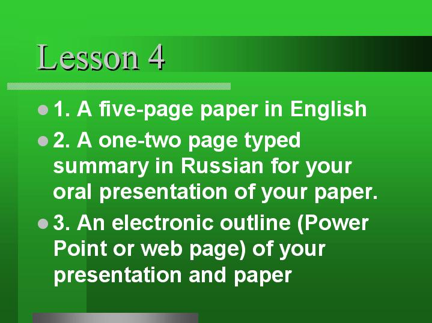

Page index / RussEcopaper
Lesson 4



Slide 10 of 16
Notes:
-
After a review of your materials and comments from the instructor, your final assignment is as follows:
-
1. A five-page paper in English on your environmental issue, with translations along with citation and quotation of the original Russian sources.
-
2. A one-two page typed summary in Russian that will serve as the basis for your oral presentation of your paper.
-
3. An electronic outline (Power Point or web page) of your presentation and paper with live links to resources you have used on this project
-
A final note: While this course has been designed primarily for students of Middlebury College, instructors of other institutions may make use of the materials with appropriate recognition (please contact me). Those who are working through the course independently are welcome to submit their materials to me for my comments and suggestions. E-mail the projects to tom.beyer@middlebury.edu.